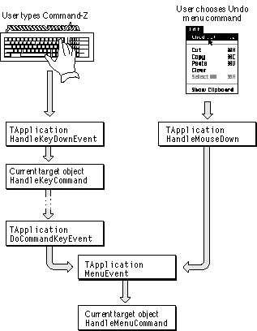
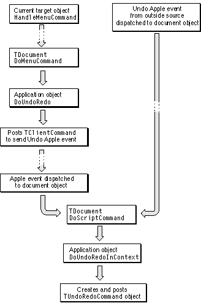

Performing Operations With Command Objects
MacApp provides a flexible mechanism for using command objects to perform operations in your application. This mechanism supports recording command operations with Apple events and performing command operations with attached scripts.The section "The Command Queue," beginning on page 99, describes how command objects are stored in a command queue and processed by the application object. This section provides additional detail on how command objects work, including a description of how a command operation is performed, undone, and redone.
Command Handlers
A command handler is an object instantiated from theTCommandHandlerclass or one of its subclasses. MacApp uses command-handler objects to help manage doing, undoing, and redoing of commands. TheTApplication,TDocument,TWindow, andTViewclasses are all command-handling classes. Any command-handler object can have a command object associated with it through itsfLastCommandfield.The Application Object
The application object, instantiated from your subclass of one of MacApp's application classes, plays several important roles in performing commands. When you post a command object to be performed, MacApp stores it in the application object's command queue (page 99). The application object periodically retrieves commands from the queue and performs them. It also provides methods to help in performing undo and redo for command objects (page 125).Command Objects
A command object is an object instantiated from theTCommandclass or one of its subclasses. A command'sDoItmethod performs the command operation. A simple command is one that does not support undo--itsfCanUndofield is set toFALSE(the default isTRUE). For a command that does support undo, theUndoItmethod undoes the command operation and theRedoItmethod redoes the operation.The Command Context
When you initialize a command object, you associate a context with it. The context is a reference to a command-handler object, such as a document or view. It is possible to have one active command per context. For example, an application can manage a separate undo operation for each of its open documents.You can get the context from a command-handler object (such as a window or document) by calling its
GetContextmethod. The default implementation ofGetContext, inTCommandHandler, just returns a reference to the command handler itself. For view objects,GetContextreturns a reference to the view's document, if it has one--otherwise, it returns a reference to the view's window.The Command Context for Classes That Handle Apple Events
Classes that handle Apple events normally mix in theMScriptableObjectclass.MScriptableObjectsupplies theGetCommandContextmethod.
- For objects that descend from
TCommandHandler,GetCommandContextcalls the object'sGetContextmethod, which normally returns the object itself as the command context.- For objects that do not descend from
TCommandHandler,GetCommandContextsupplies as the context the default Apple event target object, which is normally the application object. As a result, the command's context will default to the application object, not to the class that created the command.
- IMPORTANT
- If your application mixes
MScriptableObjectwith a class that is not a descendant ofTCommandHandler, and that class creates command objects to handle Apple events, it should override theGetCommandContextmethod. Otherwise, the default Apple event target object, usually the application object, will serve as the command's context.
When a Command Is Complete
A simple command is complete as soon as itsDoItmethod is executed. An undoable command remains active, allowing a user to undo or redo the command operation until another undoable command is associated with the same context. A command object is automatically freed when it is completed, unless itsfFreeOnCompletionfield is set toFALSE(the default value isTRUE).When a command is completed and the command operation was left in the done state, MacApp calls the command object's
Commitmethod. You override theCommitmethod to perform a task after the command operation is completed. For example, a command may mark data for deletion, then unmark or re-mark it as the user chooses Undo and Redo. The overriddenCommitmethod, which is called only if the command is completed in the done state, actually deletes the data.Command Numbering
Each command object has a command number, which is stored in the command'sfIdentifierfield. Many command numbers also serve as menu item command numbers. MacApp uses the command number to identify the command and to set the Undo/Redo menu item text (page 125). For more information on command numbers, see "MacApp's Command-Numbering System," beginning on page 131Performing a Command Operation
When your application needs to respond to a user action, you create a command object and associate a command-handler context with it. Then you call the context'sPostCommandmethod to insert the command into the application object's command queue.The application object retrieves and processes items from its command queue in first-in, first-out order. When the application object processes a command object, it calls the command's
Processmethod. TheProcessmethod calls thePerformCommandmethod of the command object's context.In some situations, your application may need to perform an operation immediately. For example, if you respond to an Apple event by posting a command, you may get a time-out error while the command is in the queue. So instead, you should create and initialize a command object, then call its
Processmethod directly, instead of posting the command to the command queue.The next section describes how a command object can send an Apple event to record its operation or allow an attached script to handle the operation. For commands that send an Apple event, you again may want to call
Processdirectly to control the order in which Apple events are recorded.Command Objects and Apple Events
A command object based on theTCommandclass can send an Apple event describing its command operation. MacApp's Apple event-dispatching mechanism (described in "Dispatching Apple Events," beginning on page 150) allows attached scripts to respond to Apple events, so using command objects lets your application handle user actions in a flexible way. The next two sections demonstrate how a MacApp application handles an operation specified directly by a user action and how it handles the same operation specified by an Apple event.Using a Command Object That Sends an Apple Event
To handle a user menu choice with a command object that sends an Apple event:
- In the
DoMenuCommandmethod of a command-handler object (such as a document or view), you create and post a command object to handle the user menu choice. You set the command'sfUseAppleEventfield toTRUE, indicating that the command should send an Apple event when it is performed.- The application object retrieves the command object from the command queue and tells the command's context (a command-handler object such as a document or view; usually the same object that created the command) to perform the command. Since
fUseAppleEventisTRUE, the context asks the command to supply an Apple event describing the command operation, then sends the resulting Apple event. At this point, the Apple event may be recorded.- MacApp's predispatch callback routine dispatches the Apple event to its specified object, typically a command handler such as a document or view object and possibly the same context that sent the Apple event. This gives any script attached to the target object a chance to handle the Apple event. (The predispatch handler is installed only if at least one object in the application currently has an attached script.)
- If the Apple event isn't handled by a script, MacApp's standard callback routine,
TOSDispatcher::DispatchHandler, dispatches the event to its specified object. However, theDispatchHandlermethod has built-in machinery that attempts to associate the target object with a command handler (by calling theIsPendingActionmethod, which in turn calls theGetCommandContextmethod), and to determine whether the command handler is the same one that sent the current Apple event.For example, if a context, such as a document object, has performed a command that has sent an Apple event to make the operation recordable, it isn't necessary to dispatch the Apple event to the context to create a command to handle the operation, since the context has already created such a command.
On the other hand, if the Apple event was sent by the currently pending command, the
DispatchHandlermethod returns without handling the event. As a result, the command's context continues to perform the command and calls theDoItmethod, which does the command operation.Finally, if a failure occurs while processing the Apple event, the pending command will serve as a fallback. This is why MacApp's scripting architecture has commands create Apple events.
Using a Command Object to Respond to an Apple Event
The previous section describes how to use a command object to handle an operation specified by a user menu choice. This section describes how to handle the same operation when it is specified by an Apple event. The Apple event may be sent by a script, or by an external process or other source outside the application. If recording is on, the Apple event will already have been recorded before it is received by MacApp:Although the processes described in this and the previous section are somewhat complex, they can be reduced to a couple of fairly straightforward rules:
- MacApp's predispatch callback routine dispatches the Apple event to its specified object, typically a command handler such as a document or view object. This gives any script attached to the target object a chance to handle the Apple event. (The predispatch handler is installed only if at least one object in the application currently has an attached script.)
- If the Apple event isn't handled by an attached script, MacApp's standard callback routine dispatches the event to its specified object. The
DispatchHandlermethod determines that the Apple event wasn't sent by the target object itself as part of a command operation. It goes ahead and calls the target object'sDoScriptCommandmethod, passing in a MacApp command number for the specified event.- In the
DoScriptCommandmethod of the target object (an object based on a class that mixes inMScriptableObject), you create a command object to perform the specified operation. You set the command'sfUseAppleEventfield toFALSE, indicating that the command should not send an Apple event when it is performed, since the command is already being created in response to a received Apple event.You do not post the command to the command queue. Instead, you call its
Processmethod to process the command immediately. Then, if an error occurs, you can handle it while you still have access to the Apple event that initiated the command.- Because
fUseAppleEventisFALSE, the context does not ask the command to supply an Apple event describing the command operation. It just calls theDoItmethod, which performs the command operation.In the
- To handle a user-specified operation, create and post a command object that can perform the operation. If the operation is recordable or you want to give an attached script an opportunity to handle it, set the
fUseAppleEventfield toTRUEand override theMakeAppleEventmethod to create an Apple event that describes the command operation. You create the command object in a method such asDoMenuCommandorDoMouseCommand.- To handle the same operation specified by an Apple event, create the same type of command object, but set the
fUseAppleEventfield toFALSEand call the command'sProcessmethod. You create the command object in theDoScriptCommandmethod of a class that mixes inMScriptableObject.TCommandclass,fUseAppleEventdefaults toFALSEandMakeAppleEventjust returnsNULL. Subclasses override theMakeAppleEventmethod to create an Apple event that describes the command operation. Several MacApp command classes provide examples of this mechanism, includingTNewDocumentCommand,TPrintCommand, andTQuitAppCommand.Linked Commands
MacApp supports "linking" of two commands, which means that doing, undoing, redoing, or committing either command causes its linked command to be done, undone, redone, or committed as well. For example, to perform a drag operation that causes data to be moved between two views, the source view creates a command to delete the data and the destination view creates a command to insert the data. The commands are then linked together, so undoing or redoing the operation changes the data in each view as required. (This process is described in greater detail in Chapter 9, "Drag and Drop.")MacApp's
TCommandHandlerclass automatically manages operations on linked commands. For example, when MacApp performs a command, it checks the command'sfValidationFailedfield. If either command of a linked pair of commands fails to complete because of a validation error, MacApp ensures that both commands are left undone and that the Clipboard is also left in its previous state.Undoing a Command Operation
When you define a command class to perform an undoable operation, you supplyDoIt,UndoIt, andRedoItmethods. MacApp supplies a mechanism for calling these methods at the appropriate time, making much of the work of undoing and redoing a command operation automatic.The Undo/Redo Menu Item
The Undo/Redo menu item appears in the Edit menu. It is enabled or disabled by the following process:Setting the text for an Undo/Redo menu item depends on information stored in the application's
- MacApp calls
gApplication->SetupTheMenuswhenever the status of menu items might need to be updated (see "Enabling and Disabling Menu Items," beginning on page 306).- The
SetupTheMenusmethod first disables each menu item on each menu MacApp manages, then calls theHandleSetupMenusmethod of the current target object.- The
HandleSetupMenusmethod causes theDoSetupMenusmethod to be called for each behavior object and event-handler object in the target chain.- For the
TCommandHandlerclass, theHandleSetupMenusmethod calls theSetupUndoMenumethod.- If the command-handler object has an undoable command associated with it,
SetupUndoMenuenables thecUndomenu command. It then calls an application method,SetUndoText, passing a Boolean value that indicates whether the command is in the done or undone state.- The
SetUndoTextmethod determines what text should go in the Undo/Redo menu item and sets that text. It calls the global routineCommandToNameto get the menu item text based on the command number, then prepends the word "Undo" or "Redo", depending on the state of the command. For a Copy command in the done state, for example, the text would be set to "Undo Copy".'CMNU'resources. These resources describe an application's menus and associate a command number with each menu item.For commands that do not appear on any menu, you specify the Undo/Redo text in a special
'CMNU'resource called the Buzzwords menu. This resource is described in "The Buzzwords 'CMNU' Resource," beginning on page 305. The Buzzwords menu does not appear in your application's menu bar--you use it only to supply MacApp with information about commands that do not appear on any menu.If, for example, your application has a drawing command that is initiated by dragging with the mouse (it doesn't appear on any of your application's menus), you supply an entry to the Buzzwords menu that specifies "Drawing" as the Undo/Redo text for the command. As a result, MacApp can display the text "Undo Drawing".
The Undo/Redo Flow of Control
When the Undo/Redo menu item is enabled, the user can reverse the state of the current command by typing Command-Z or choosing the Undo menu item. The result is a call to the current target object'sHandleMenuCommandmethod. The flow of control to theHandleMenuCommandmethod is shown in Figure 5-7. (The general operation of theHandleMenuCommandmethod is shown in Figure 5-4.)The
cUndomenu command is typically handled by theDoMenuCommandmethod of theTDocumentclass, which calls the application object'sDoUndoRedomethod. TheDoUndoRedomethod posts aTClientCommandto send an Undo Apple event.The Undo event sent by the
TClientCommandobject is received immediately and dispatched to the document object'sDoScriptCommandmethod. The same dispatching occurs if an Undo event specifying the document object as its target is received from a script or other source. The document'sDoScriptCommandmethod handles the Undo event by calling the application object'sUndoRedoInContextmethod.Both the
TDocumentand theTApplicationclasses handle thecUndocommand number by callingUndoRedoInContextfrom theirDoScriptCommandmethods. If you handle undo/redo in a context other than an application or document, your context'sDoScriptCommandmethod should also call the application object'sUndoRedoInContextmethod.Figure 5-7 Initiating an undo operation

The application's
UndoRedoInContextmethod creates and posts aTUndoRedoCommandobject, which is inserted into the application's command queue. Figure 5-8 continues where Figure 5-7 leaves off, at the current target object'sHandleMenuCommandmethod.Figure 5-8 Handling an Undo command or Undo Apple event

Figure 5-8 shows the steps leading to the creation and posting of a
TUndoRedoCommandobject, including the case of an Undo event received from an attached script or from a source outside the application. The application object retrieves theTUndoRedoCommandobject from the command queue and processes it, resulting in a call to theDoItmethod. TheTUndoRedoCommand::DoItmethod retrieves a command from its context, typically the document object. If the command is currently in the done state,DoItcalls the command'sUndoItmethod; if the command is in the undone state,DoItcalls theRedoItmethod.
- Note
- This process is slightly more complicated when the command is a linked command. Linked commands are described in "Linked Commands," beginning on page 123.

Commands and Change Notification
When theTCommandHandler::DoPerformCommandmethod calls a command object'sCommitmethod after the command's operation is performed, it also calls the command'sDoNotificationmethod. TheTCommand::DoNotificationmethod calls theChangedmethod of the object referenced by itsfObjectToModifyfield. ThefObjectToModifyfield normally refers to the command's context--the same object referred to by thefContextfield.Your application can take advantage of this notification mechanism. For example, the
Changedmethod of theTDocumentclass modifies the document's change count, to keep track of whether the document needs to be saved.Commands and the Clipboard
MacApp's command mechanism makes it relatively easy to work with the Clipboard. For example, MacApp automatically switches back and forth between Undo and Redo Clipboard views as the user chooses to undo and redo a command that affects the Clipboard. MacApp's Clipboard support can display'PICT'and'TEXT'data types in a Clipboard view. You can build on MacApp's support to cut and paste your private data types as well.Basic Clipboard support is described in the next section. Commands that work with the Clipboard are implemented in Chapter 22, "Working With the Clipboard."